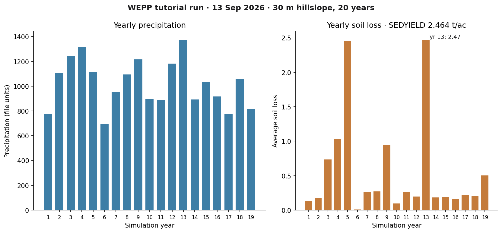
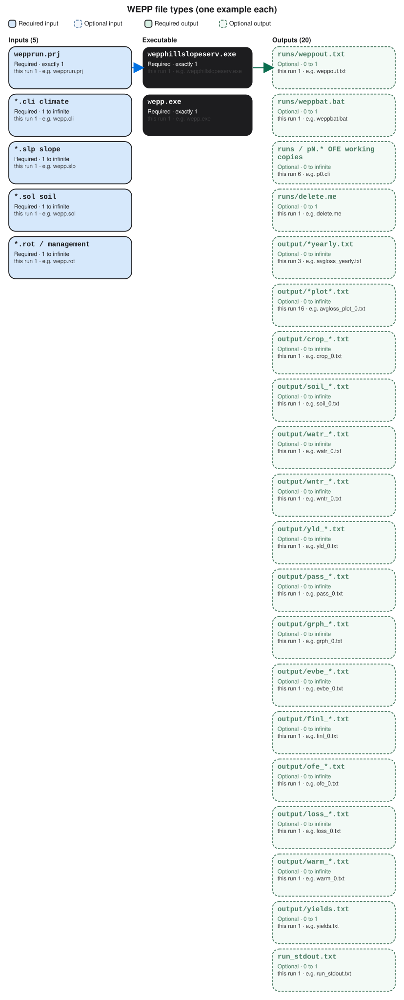

WEPP
A first successful hillslope run of the Water Erosion Prediction Project on Windows. You download WEPP from USDA-ARS NSERL, copy a 30 m project into a fresh folder, call wepphillslopeserv.exe with wepp.exe, and read SEDYIELD in weppout.txt. The Windows GUI (weppwin) is installed; this path uses the hillslope service.
1. What this model does
WEPP is a continuous, process-based erosion model. On a hillslope it tracks infiltration, runoff, and sediment along one or more overland-flow elements. Climate, soil, slope geometry, and management are four separate files. The number you will read first is average annual sediment yield, SEDYIELD, in tons per acre.
The lab’s pinned engine is wepp.exe version 2012.800, launched by wepphillslopeserv.exe. NSERL now ships a 2024 Windows package as well; this verified path stays on 2012.800.
2. Get the software
Download WEPP for Windows from the National Soil Erosion Research Laboratory. The current installer is the September 2024 package (WEPP 2024 plus 2012.8). The 30 August 2012 package is still posted and matches this lab’s CLI. Install somewhere writable; NSERL warns against C:\Program Files.
On this host the tree is already at C:\Grok\Models\installs\WEPP (installer under archive\downloads\WEPP_extract). If you are repeating the lab path, you can skip the download and use that folder.
3. The lab install
The GUI lives under weppwin. The verified CLI lives under cli_verify.
| Piece | Where | First-run role |
|---|---|---|
wepphillslopeserv.exe |
cli_verify\ (also wepp\) |
Hillslope service. It writes a runs\ batch and calls wepp.exe. |
wepp.exe |
same folder, and copied into runs\ |
WEPP 2012.800. The service launches it from runs\; copy the exe there or it will print “not recognized.” |
wepprun.prj |
cli_verify\ |
Project: 30 m length, metric profile, 20 simulation years, pointing at wepp.slp, wepp.cli, wepp.sol, wepp.rot. |
| Climate / soil / slope / management | wepp.cli, wepp.sol, wepp.slp, wepp.rot |
Required. Uniform 3.16% silt-loam hillslope with a crop rotation. |
weppwin |
installs\WEPP\weppwin\ |
Windows GUI. Useful later. Not used for the verified run. |
installs\WEPP\golden points at a prior cli_verify tree. The verification below used a new working copy, so that golden tree stays untouched. tools\test_all_models.ps1 still runs in place under cli_verify; the tutorial wrapper below uses a disposable folder.
4. Novice path: run the 30 m hillslope
You will copy the project files into a fresh folder, copy wepp.exe into runs\, and call the hillslope service with six arguments: working directory, project file, output XML, engine name, then two zeros.
$src = "C:\Grok\Models\installs\WEPP\cli_verify"
$run = "C:\Grok\Models\installs\WEPP\tutorial_run_20260913"
New-Item -ItemType Directory -Force -Path "$run\runs","$run\output" | Out-Null
foreach ($n in "wepprun.prj","wepp.cli","wepp.rot","wepp.slp","wepp.sol","wepp.exe","wepphillslopeserv.exe") {
Copy-Item "$src\$n" $run -Force
}
Copy-Item "$run\wepp.exe" "$run\runs\wepp.exe" -Force
Set-Location $run
.\wepphillslopeserv.exe $run wepprun.prj "$run\runs\weppout.txt" wepp.exe 0 0
On this host you can instead rerun the lab wrapper, which copies those files, executes the service, asserts the numbers below, and rewrites the figure:
python C:\Grok\Models\tools\run_wepp_tutorial_verify.py
If wepp.exe is missing from runs\, the service still writes weppout.txt with zeros and WEPP_VERSION UNKNOWN. Copy the engine into runs\ before you call the service.
5. Confirm the run
Open runs\weppout.txt. A successful 2012.800 run lists a version and a positive sediment yield.
| Check | Where | This verification (13 Sep 2026) |
|---|---|---|
| WEPP version | <WEPP_VERSION> |
2012.800 |
| Sediment yield | <SEDYIELD> |
2.464227 t/ac |
| Soil loss | <LOSS> |
2.462443 |
| Runoff | <RUNOFF> |
4.985827 |
| Precipitation | <PRECIP> |
40.091339 |
The automated test is test_tutorial_run inside tools\run_wepp_tutorial_verify.py. It requires SEDYIELD equal to 2.464227 t/ac within 0.001, plus matching PRECIP, LOSS, and RUNOFF. That is the same numeric check as test_all_models.ps1, pointed at a new working copy rather than the golden cli_verify tree.
6. This verification’s figure
The 13 Sep 2026 run wrote nineteen yearly rows in output\avgloss_yearly.txt and output\precip_yearly.txt. Average annual sediment yield is 2.464 t/ac. Years 5 and 13 are the soil-loss peaks (~2.47). Year 6 is near zero.

installs\WEPP\tutorial_run_20260913. Left: yearly precipitation. Right: yearly average soil loss, with the period SEDYIELD in the title.If you rerun the wrapper, this PNG is rewritten in the run folder and in each tutorial images\ home.
Model Input and Output
Same-type files that only change location or ID are shown once. The count under each name is how few and how many of that type a run can hold. The example name is one file from the verification folder.

Executable
wepphillslopeserv.exe
How many: exactly 1. This run: 1. Example: wepphillslopeserv.exe.
This is the hillslope service. One copy. You give it the project folder, wepprun.prj, an output path, and wepp.exe. Open the example file in the verification folder to see that layout on disk.
wepp.exe
How many: exactly 1. This run: 1. Example: wepp.exe.
This is the WEPP 2012.800 engine. One science binary. The service launches it. A second copy is often staged under runs/. Open the example file in the verification folder to see that layout on disk.
Input files
wepprun.prj
How many: exactly 1. This run: 1. Example: wepprun.prj.
This is the project file. It names slope, climate, soil, and management files, years, and output options. One project per hillslope run. Open the example file in the verification folder to see that layout on disk.
*.cli climate
How many: 1 to infinite. This run: 1. Example: wepp.cli.
This is climate in WEPP breakpoint form. The project names at least one. Extra .cli files only if you point different segments at different climate.
*.slp slope
How many: 1 to infinite. This run: 1. Example: wepp.slp.
This is the slope profile: length and steepness of each overland-flow element. One file can hold many elements. Extra files if segments use different profiles.
*.sol soil
How many: 1 to infinite. This run: 1. Example: wepp.sol.
This is soil layers, texture, and erodibility. The project can name one file for the whole slope or a different file per element. Open the example file in the verification folder to see that layout on disk.
*.rot / management
How many: 1 to infinite. This run: 1. Example: wepp.rot.
This is the management rotation: plant, tillage, and residue. One file can serve the slope, or each element can have its own. Open the example file in the verification folder to see that layout on disk.
Output files
runs/weppout.txt
How many: 0 to 1. This run: 1. Example: runs/weppout.txt.
This is the XML summary the service writes. One file. SEDYIELD, LOSS, RUNOFF, and PRECIP here are the numbers the test reads. Open the example file in the verification folder to see that layout on disk.
runs/weppbat.bat
How many: 0 to 1. This run: 1. Example: runs/weppbat.bat.
This is a batch file the service writes to launch wepp.exe. One bat file. You do not edit it. Open the example file in the verification folder to see that layout on disk.
runs/pN.* OFE working copies
How many: 0 to infinite. This run: 6. Example: runs/p0.cli.
These are working copies the service stages per overland-flow element: climate, slope, soil, management, run, and error files. One set per OFE. Open the example file in the verification folder to see that layout on disk.
runs/delete.me
How many: 0 to 1. This run: 1. Example: runs/delete.me.
This is a placeholder the service leaves in the runs folder. One file. It is not a science table. Open the example file in the verification folder to see that layout on disk.
output/*yearly.txt
How many: 0 to infinite. This run: 3. Example: output/avgloss_yearly.txt.
These are yearly summary texts such as soil loss, sediment, and precipitation. One file per yearly product the project asked to auto-name. Open the example file in the verification folder to see that layout on disk.
output/*plot*.txt
How many: 0 to infinite. This run: 16. Example: output/avgloss_plot_0.txt.
These are detailed plot series, one file per variable and overland-flow element. Another OFE adds another file of the same type. Open the example file in the verification folder to see that layout on disk.
output/crop_*.txt
How many: 0 to infinite. This run: 1. Example: output/crop_0.txt.
This is crop output for one overland-flow element. One crop_N file per OFE when that print is on. Open the example file in the verification folder to see that layout on disk.
output/soil_*.txt
How many: 0 to infinite. This run: 1. Example: output/soil_0.txt.
This is soil output for one overland-flow element. One soil_N file per OFE. Open the example file in the verification folder to see that layout on disk.
output/watr_*.txt
How many: 0 to infinite. This run: 1. Example: output/watr_0.txt.
This is water-balance output for one overland-flow element. One watr_N file per OFE. Open the example file in the verification folder to see that layout on disk.
output/wntr_*.txt
How many: 0 to infinite. This run: 1. Example: output/wntr_0.txt.
This is winter-process output for one overland-flow element. One wntr_N file per OFE. Open the example file in the verification folder to see that layout on disk.
output/yld_*.txt
How many: 0 to infinite. This run: 1. Example: output/yld_0.txt.
This is yield output for one overland-flow element. One yld_N file per OFE. Open the example file in the verification folder to see that layout on disk.
output/pass_*.txt
How many: 0 to infinite. This run: 1. Example: output/pass_0.txt.
This is the hillslope pass file for one element, used when WEPP chains internal results. One pass_N file per OFE. Open the example file in the verification folder to see that layout on disk.
output/grph_*.txt
How many: 0 to infinite. This run: 1. Example: output/grph_0.txt.
This is graph-series output for one overland-flow element. One grph_N file per OFE. Open the example file in the verification folder to see that layout on disk.
output/evbe_*.txt
How many: 0 to infinite. This run: 1. Example: output/evbe_0.txt.
This is event-by-event output for one overland-flow element. One evbe_N file per OFE. Open the example file in the verification folder to see that layout on disk.
output/finl_*.txt
How many: 0 to infinite. This run: 1. Example: output/finl_0.txt.
This is the final-summary file for one overland-flow element. One finl_N file per OFE. Open the example file in the verification folder to see that layout on disk.
output/ofe_*.txt
How many: 0 to infinite. This run: 1. Example: output/ofe_0.txt.
This is element-level output for one overland-flow element. One ofe_N file per OFE. Open the example file in the verification folder to see that layout on disk.
output/loss_*.txt
How many: 0 to infinite. This run: 1. Example: output/loss_0.txt.
This is soil-loss detail for one overland-flow element. One loss_N file per OFE. Hillslope SEDYIELD is still in weppout.txt. Open the example file in the verification folder to see that layout on disk.
output/warm_*.txt
How many: 0 to infinite. This run: 1. Example: output/warm_0.txt.
This is warming or temperature-related output for one overland-flow element. One warm_N file per OFE. Open the example file in the verification folder to see that layout on disk.
output/yields.txt
How many: 0 to 1. This run: 1. Example: output/yields.txt.
This is a yield summary for the hillslope. One file when that output is on. Open the example file in the verification folder to see that layout on disk.
run_stdout.txt
How many: 0 to 1. This run: 1. Example: run_stdout.txt.
This is console text captured from the service. One capture. WEPP may print little; weppout.txt is the confirmation file. Open the example file in the verification folder to see that layout on disk.
7. After the first success
Once weppout.txt has a version and a yield, you can open the yearly files under output\ or change slope length in wepp.slp and wepprun.prj. A channel/watershed run is a different project file. This lesson stops at a verified hillslope CLI.